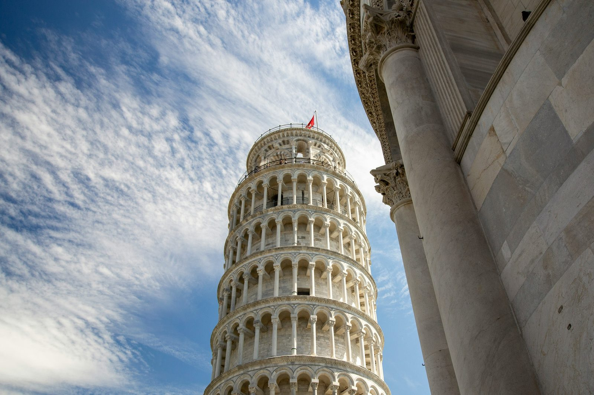
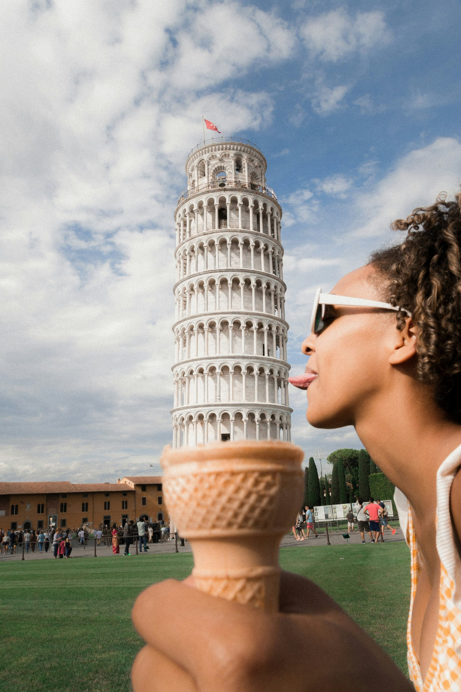

Discover the intriguing history of the Leaning Tower of Pisa, a renowned Italian landmark known for its unique tilt. Learn about its construction, famous legends, and architectural mysteries. Plan your visit to this iconic site and explore its cultural significance.
Scopri l'affascinante storia della Torre di Pisa, un celebre punto di riferimento italiano noto per la sua inclinazione unica. Approfondisci la sua costruzione, le famose leggende e i misteri architettonici. Pianifica la tua visita a questo sito iconico ed esplora il suo significato culturale.
La Torre di Pisa è un famoso monumento italiano situato nella città di Pisa, in Toscana. È stata costruita come campanile per la cattedrale di Santa Maria, ed è diventata celebre per la sua inclinazione. La costruzione iniziò nell'anno 1173 e continuò per molti anni. Durante i lavori, il terreno sotto la torre iniziò a cedere a causa di un fiume vicino, chiamato Auser (oggi Serchio). Questo fece sì che la torre cominciasse a inclinarsi verso sud-est.

Negli anni successivi, diversi architetti cercarono di correggere l'inclinazione aggiungendo più piani alla torre. Nonostante ciò, la torre rimase inclinata, dando vita a una delle caratteristiche più famose al mondo. Oggi la Torre di Pisa è visitata da milioni di turisti ogni anno che vengono a vedere questa meraviglia architettonica.
Secondo una leggenda, il famoso scienziato italiano Galileo Galilei avrebbe condotto esperimenti dalla cima della torre per studiare la caduta dei corpi e dimostrare le sue teorie sulla gravità.

Un'altra curiosità è che salire sulla torre è considerato sfortunato per i pisani. Si dice che gli studenti universitari dovrebbero evitarlo, altrimenti potrebbero impiegare più tempo del previsto per laurearsi!
La Torre di Pisa è davvero un'opera affascinante e unica nel suo genere, rappresentativa della ricca storia e cultura italiana.
fonte: La torre di Pisa: tutto sul monumento inclinato
Parole Chiave
| Torre | Una struttura alta e solida, spesso usata per scopi difensivi o per campanili. |
| Inclinazione | La posizione non verticale di qualcosa; quando qualcosa non è dritto ma è inclinato. |
| Monumento | Una costruzione importante o simbolo che rappresenta una città o una cultura. |
| Cattedrale | Una grande chiesa, spesso la sede di un vescovo o di una diocesi. |
| Costruzione | L'atto di mettere insieme parti per creare qualcosa di nuovo. |
| Celebre | Molto famoso o conosciuto da molte persone. |
| Storia | Eventi e fatti passati che spiegano come qualcosa è arrivato a essere come è oggi. |
| Leggende | Racconti popolari che potrebbero non essere completamente veri ma sono interessanti da ascoltare. |
| Architettonico | Relativo all'arte e alla scienza di progettare e costruire edifici. |
| Misteri | Cose che non sono completamente comprese o spiegate. |
| Visitatori | Persone che vanno a vedere un luogo famoso o interessante. |
| Opere | Creazioni artistiche, come dipinti, sculture o edifici. |
| Cultura | Le abitudini, le tradizioni e l'arte di un gruppo di persone. |
| Significato | Ciò che una cosa rappresenta o rappresenta per le persone. |
Esercizio
Domande
- Perché la Torre di Pisa è inclinata?
- Chi ha iniziato i lavori di costruzione della Torre di Pisa e in che anno?
- Qual è stata l'importanza dell'esperimento di Galileo Galilei?
- Come è stato tentato di correggere l'inclinazione della Torre di Pisa nel 1835?
- Perché salire sulla Torre di Pisa è considerato sfortunato per i pisani?